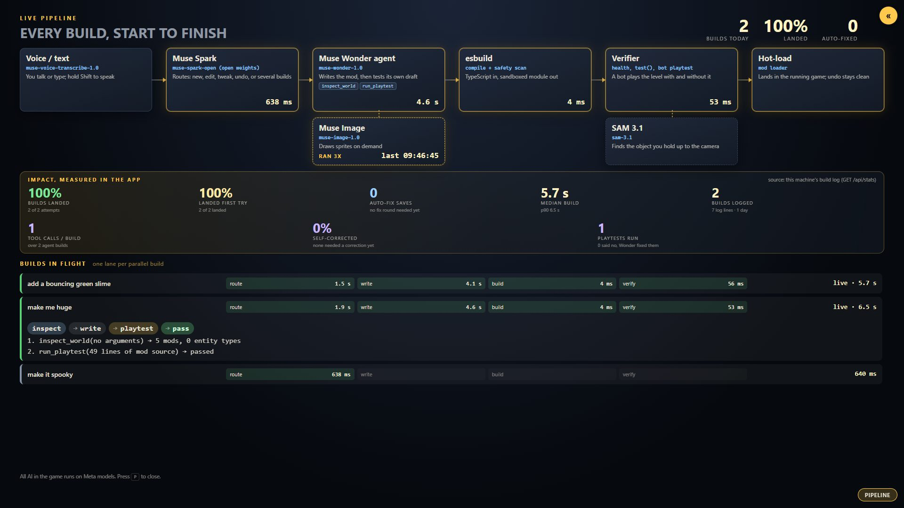
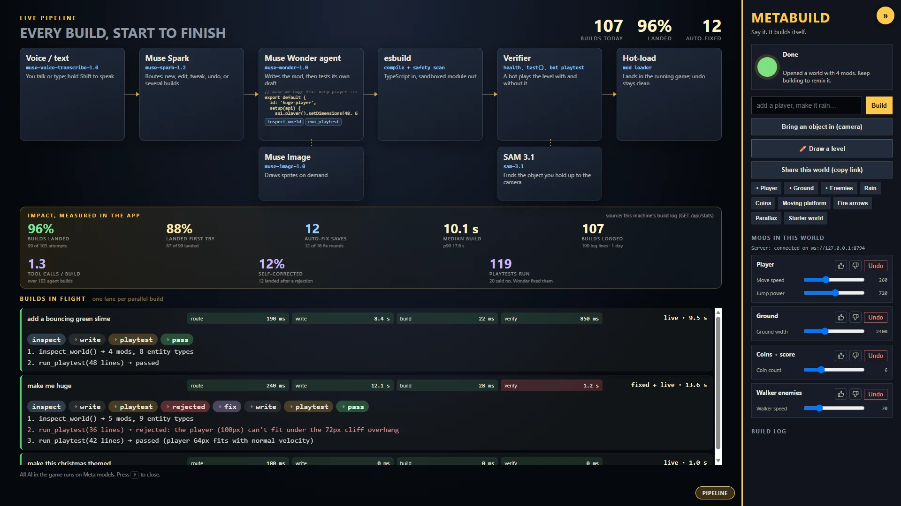
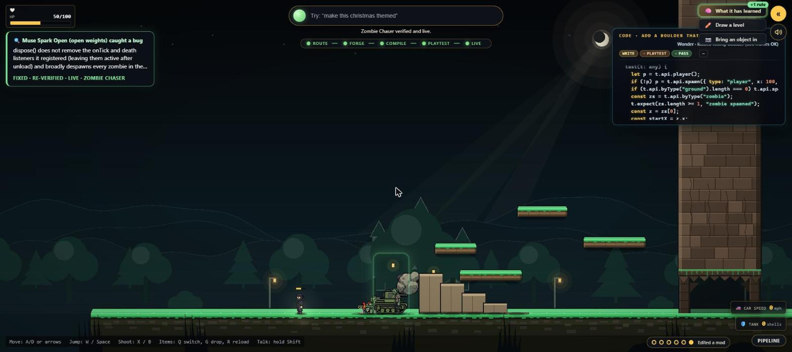

Software that changes itself while it runs. The technology is the showcase, proven in a live game.
Talk to it, and software builds itself around you while you play. AI agents write the code, test it, playtest it, and hot-load it live in seconds. Nothing ships unverified. Talk-to-Build. Solo entry, Indie track, Meta Global AI Developer Hackathon 2026.
The platformer is our live proof of work: every change is real code you can see, play with, and try to break in real time.
The loop
An autonomous software engineering team in a loop. Nothing ships unverified.
Live Coding. You ask for an idea. Muse Wonder—our AI software engineer—instantly writes the TypeScript code and writes custom unit tests with it.Every module exposes live knobs, a test() suite, and a clean dispose().
Sandbox Testing. Before anything touches your game, the new code passes a safety scan, compiles, runs 600 headless frames of a deterministic 60 Hz simulation, and runs its own test(). If anything fails, it never ships.
Automated QA Playtest. A QA bot actually plays a copy of your world, with and without the change, on three seeds. If it can't reach the goal, the build is rejected.
Zero-Downtime Hot-Deploy. The verified feature drops straight into the running game with no restart and no reload, a median 11.2 s from words to live. And every change has a clean undo.
Now let's try to break it: "make me huge". The QA bot spots the problem right away: the oversized character cannot fit under obstacles, so it rejects the build with a bug report.
That bug report feeds straight back to the engineer. Muse Wonder inspects the world, rewrites the code to fit, and re-tests until the bot clears the course.
Self-Healing Code. Fixed, re-verified by the bot, and hot-loaded into the game—100% autonomously with no human in the loop. 20 out of 20 attempts self-healed in testing.

Continuous review
Meta's open-weights model audits live code in the background, auto-fixes edge cases, and learns permanent rules.
Why an always-on reviewer? Even code that passes playtesting can have hidden bugs or memory leaks. So Meta's open-weights model (Muse Spark Open on Baseten) continuously audits live code in the background while you keep playing.
Here it caught a real runtime bug: lingering event listeners that would leak memory.
It generated a fix, verified it through the full compile and QA playtest gates, and hot-patched the running game live. Caught a bug, auto-fixed, re-verified, live.
What it has learned: every accepted fix teaches the system. It writes new rules and agent skills that every later build reads.
So the AI engineer stops repeating the mistakes it has already been caught making. Say double-check my world and it reviews every build on demand.

Which Meta model does which job
Six Meta models acting as a complete autonomous software engineering studio.
Muse Voice Transcribemuse-voice-transcribe-1.0
Real-time speech to text: turns what you say into build requests, ~130 ms after you stop talking.
Voice InputMuse Sparkmuse-spark-1.2
Tech lead & triage: classifies intent (new feature, knob tweak, restyle, undo) and splits compound asks into parallel builds. ~1 s.
Triage & DispatchMuse Wondermuse-wonder-1.0
Autonomous software engineer: writes TypeScript mods, runs test tools (inspect_world, run_playtest), and fixes what QA rejected. Up to 4 builds in parallel, ~10–20 s.
Muse Imagemuse-image-1.0
Artist & animator: generates custom pixel-art sprite sheets and scenery on demand, in the background. ~17 s.
Asset GenerationSAM 3.1sam-3.1
Computer vision: finds a real object in a photo and cuts it out with its own mask, so it can drop into the game. ~1.2 s.
Vision SegmenterMuse Spark Open open weightsmeta-models/muse-spark-open (Baseten)
Senior code auditor: continuously reviews live code, generates patches, and writes the rules later builds read. Also an optional router: 918 ms vs 1151 ms p50 for hosted Spark over 30 runs.
Continuous ReviewerMeta's open-weights model does real engineering work: it actively audits live code, patches bugs, and teaches future builds.
100% powered by Meta AI at runtime. No other AI provider anywhere in the pipeline.
By the numbers
From the product's own append-only build log. Nothing hand-picked.
landing rate: 162 of 175 voice & text prompts verified and hot-loaded live.
median from a sentence to verified code running in game (p90 26.9 s).
"make me huge" rejected by QA and autonomously self-healed with no human
automated tests in the test suite
architecture decision records (ADRs)
Source: docs/evidence/build-stats.md (regenerate with npm run stats), docs/process/rehearsal-20x.md, docs/adr/.
The loop is the technology. The game is the ultimate proof.The exact same autonomous loop—code, test, playtest, hot-deploy, and learn—fits any software that has to keep running while it changes.
npm install, npm run build && npm start · Add your Meta Model API key to unlock full live agentic creation. (Demo worlds playable offline).